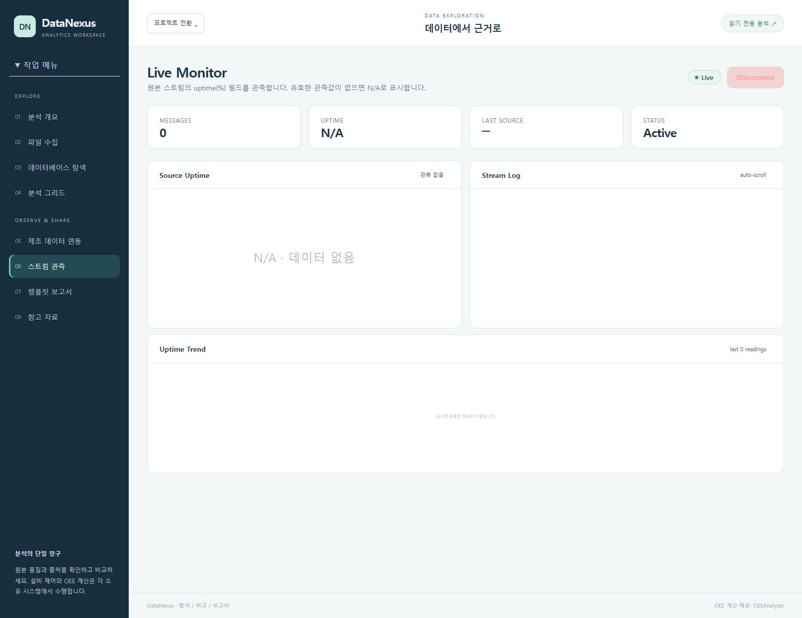

확인된 동작
기존 브라우저 검사에서 합성 CSV 4행 업로드 → SVG 차트 → 분석 그리드 반영을 확인했습니다. 2026-10-09 OEE API 연결은 확인했지만 Kafka 미연결·최신 sample null로 전체 흐름은 미완료였습니다.
PROJECT 05 / EXPLORE & REPORT
데이터를 탐색하고 출처를 비교하다
THE PROBLEM
파일·DB·스트림 데이터를 탐색하는 동안 원본 품질과 계산 제공자를 놓치기 쉽습니다.
THE WORKSPACE
CSV/JSON 수집, 분석 그리드, DB 탐색, 스트림 관측과 보고서를 제공합니다. 출처를 확인하는 읽기 작업 공간으로 OEE 계산을 중복하지 않습니다.
DESIGN DECISIONS
FROM OVERVIEW TO HANDS-ON
교육용 CSV를 차트와 재현 가능한 보고서로
가상 CSV 실습 · Kafka/OEE 미연결 · 보고서 저장은 미검증

화면을 보며 따라가기기존 브라우저 검사에서 합성 CSV 4행 업로드 → SVG 차트 → 분석 그리드 반영을 확인했습니다. 2026-10-09 OEE API 연결은 확인했지만 Kafka 미연결·최신 sample null로 전체 흐름은 미완료였습니다.
대용량·취소·동시 import, 사용자별 범위, 캐시 상한과 읽기 이벤트의 중복·지연을 검증합니다.
화면은 로컬 개발 환경에서 직접 캡처했습니다. PLC → Gateway → Twin 읽기 흐름은 2026-10-09 격리 fixture에서 확인했습니다. 일곱 제품의 운영 통합, 실장비 제어, 정상 OEE 생산 흐름과 AssetHub 승인 API는 확인 범위에 포함하지 않습니다.